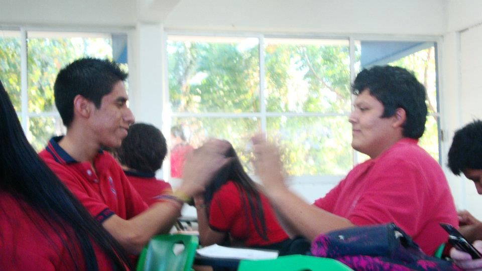

Una pequeña frase
La ignorancia es la noche de la mente, pero una noche sin luna y sin estrellas
¿Como nos conocimos?
Todo empezó en el CBTis 224, pasando el tiempo del primer semestre formabamos parte de la misma clica, asi fue como empezó la amistad
Al pasar el tiempo mientras estudiabamos el bachillerato eramos muy buenos amigos, sabiamos que uno contaba con el otro para la mayoria de las cosas

Al terminar el bachillerato, tubimos la sorpresa de que en la universidad no encontramos en la misma, incluso en la misma carrera
Hasta la fecha nuestra amistad sigue en pie